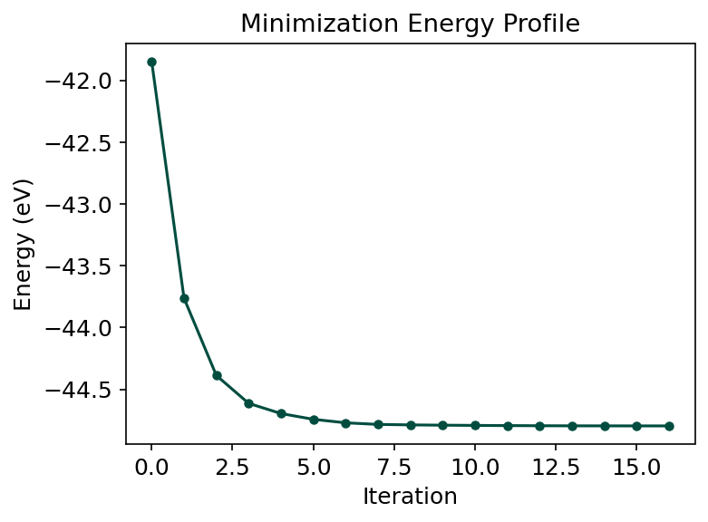
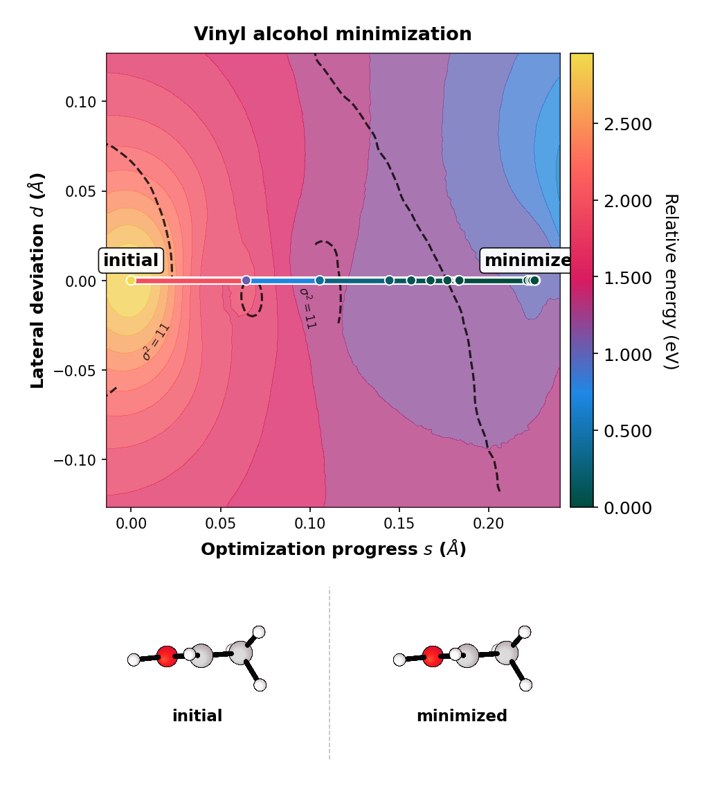
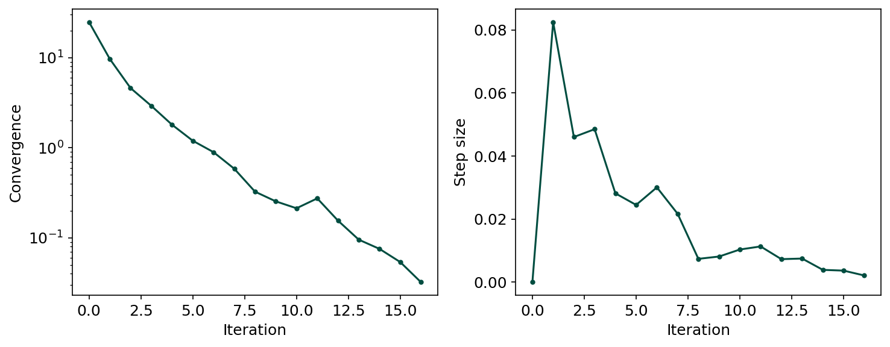
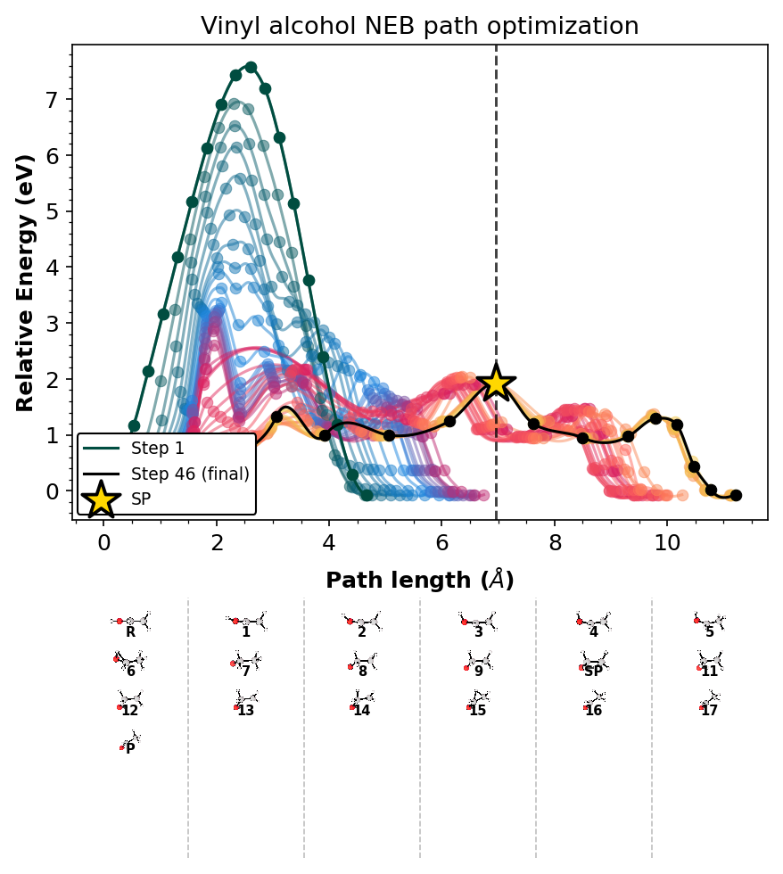
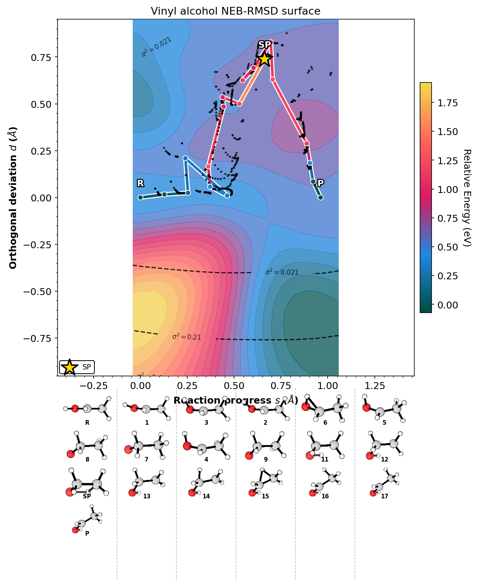

min_profile = plot_dir / "min_profile.png"
run_rgpycrumbs(
"eon", "plt-min",
"--job-dir", str(min_dir),
"--label", "vinyl alcohol",
"--prefix", "minimization",
"--plot-type", "profile",
"--dpi", "150",
"--output", str(min_profile),
)
show_plot(min_profile)
$ /home/runner/work/eOn/eOn/.pixi/envs/docs-mta/bin/python3.12 -m rgpycrumbs.cli eon plt-min --job-dir /tmp/eon_tutorial_cg3ip1r9/minimization --label vinyl alcohol --prefix minimization --plot-type profile --dpi 150 --output /tmp/eon_tutorial_cg3ip1r9/plots/min_profile.png
--> Dispatching to: /home/runner/work/eOn/eOn/.pixi/envs/docs-mta/bin/python3.12 /home/runner/work/eOn/eOn/.pixi/envs/docs-mta/lib/python3.12/site-packages/rgpycrumbs/eon/plt_min.py --job-dir /tmp/eon_tutorial_cg3ip1r9/minimization --label vinyl alcohol --prefix minimization --plot-type profile --dpi 150 --output /tmp/eon_tutorial_cg3ip1r9/plots/min_profile.png
[08/19/26 09:50:55] INFO INFO - Loading minimization trajectory from
/tmp/eon_tutorial_cg3ip1r9/minimization
INFO INFO - Using minimization metrics from frame
metadata (17 rows)
INFO INFO - Loaded 17 frames, 17 data rows
INFO INFO - Loaded minimization trajectory from
/tmp/eon_tutorial_cg3ip1r9/minimization (17 frames)
INFO INFO - Setting global rcParams for ruhi theme
WARNING WARNING - Font 'Atkinson Hyperlegible' not found.
Falling back to 'sans-serif'.
INFO INFO - Saved
/tmp/eon_tutorial_cg3ip1r9/plots/min_profile.png
--> Using active interpreter (readcon/plot stack present or --dev)

min_landscape = plot_dir / "min_landscape.png"
run_rgpycrumbs(
"eon", "plt-min",
"--job-dir", str(min_dir),
"--label", "vinyl alcohol",
"--prefix", "minimization",
"--plot-type", "landscape",
"--project-path",
"--surface-type", "grad_imq",
"--plot-structures", "endpoints",
"--strip-renderer", "xyzrender",
"--strip-dividers",
"--xyzrender-config", "paton",
"--rotation", "90x,0y,0z",
"--dpi", "150",
"--output", str(min_landscape),
)
show_plot(min_landscape)
$ /home/runner/work/eOn/eOn/.pixi/envs/docs-mta/bin/python3.12 -m rgpycrumbs.cli eon plt-min --job-dir /tmp/eon_tutorial_cg3ip1r9/minimization --label vinyl alcohol --prefix minimization --plot-type landscape --project-path --surface-type grad_imq --plot-structures endpoints --strip-renderer xyzrender --strip-dividers --xyzrender-config paton --rotation 90x,0y,0z --dpi 150 --output /tmp/eon_tutorial_cg3ip1r9/plots/min_landscape.png
--> Dispatching to: /home/runner/work/eOn/eOn/.pixi/envs/docs-mta/bin/python3.12 /home/runner/work/eOn/eOn/.pixi/envs/docs-mta/lib/python3.12/site-packages/rgpycrumbs/eon/plt_min.py --job-dir /tmp/eon_tutorial_cg3ip1r9/minimization --label vinyl alcohol --prefix minimization --plot-type landscape --project-path --surface-type grad_imq --plot-structures endpoints --strip-renderer xyzrender --strip-dividers --xyzrender-config paton --rotation 90x,0y,0z --dpi 150 --output /tmp/eon_tutorial_cg3ip1r9/plots/min_landscape.png
[08/19/26 09:50:57] INFO INFO - Loading minimization trajectory from
/tmp/eon_tutorial_cg3ip1r9/minimization
INFO INFO - Using minimization metrics from frame
metadata (17 rows)
INFO INFO - Loaded 17 frames, 17 data rows
INFO INFO - Loaded minimization trajectory from
/tmp/eon_tutorial_cg3ip1r9/minimization (17 frames)
INFO INFO - Setting global rcParams for ruhi theme
WARNING WARNING - Font 'Atkinson Hyperlegible' not found.
Falling back to 'sans-serif'.
[08/19/26 09:50:58] INFO INFO - Calculating landscape coordinates (RMSD-A,
RMSD-B)...
INFO INFO - Generating 2D surface using grad_imq
(Projected: True)...
INFO INFO - Unable to initialize backend 'tpu':
INTERNAL: Failed to open libtpu.so: libtpu.so:
cannot open shared object file: No such file or
directory
[08/19/26 09:51:06] INFO INFO - Loading /tmp/tmpqenpvgk5.xyz
INFO INFO - Built graph: 8 atoms, 7 bonds
INFO INFO - Loading /tmp/tmpqbgdxdf9.xyz
INFO INFO - Built graph: 8 atoms, 7 bonds
[08/19/26 09:51:07] INFO INFO - Saved
/tmp/eon_tutorial_cg3ip1r9/plots/min_landscape.png
--> Using active interpreter (readcon/plot stack present or --dev)

min_convergence = plot_dir / "min_convergence.png"
run_rgpycrumbs(
"eon", "plt-min",
"--job-dir", str(min_dir),
"--label", "vinyl alcohol",
"--prefix", "minimization",
"--plot-type", "convergence",
"--dpi", "150",
"--output", str(min_convergence),
)
show_plot(min_convergence)
$ /home/runner/work/eOn/eOn/.pixi/envs/docs-mta/bin/python3.12 -m rgpycrumbs.cli eon plt-min --job-dir /tmp/eon_tutorial_cg3ip1r9/minimization --label vinyl alcohol --prefix minimization --plot-type convergence --dpi 150 --output /tmp/eon_tutorial_cg3ip1r9/plots/min_convergence.png
--> Dispatching to: /home/runner/work/eOn/eOn/.pixi/envs/docs-mta/bin/python3.12 /home/runner/work/eOn/eOn/.pixi/envs/docs-mta/lib/python3.12/site-packages/rgpycrumbs/eon/plt_min.py --job-dir /tmp/eon_tutorial_cg3ip1r9/minimization --label vinyl alcohol --prefix minimization --plot-type convergence --dpi 150 --output /tmp/eon_tutorial_cg3ip1r9/plots/min_convergence.png
[08/19/26 09:51:09] INFO INFO - Loading minimization trajectory from
/tmp/eon_tutorial_cg3ip1r9/minimization
INFO INFO - Using minimization metrics from frame
metadata (17 rows)
INFO INFO - Loaded 17 frames, 17 data rows
INFO INFO - Loaded minimization trajectory from
/tmp/eon_tutorial_cg3ip1r9/minimization (17 frames)
INFO INFO - Setting global rcParams for ruhi theme
WARNING WARNING - Font 'Atkinson Hyperlegible' not found.
Falling back to 'sans-serif'.
[08/19/26 09:51:10] INFO INFO - Saved
/tmp/eon_tutorial_cg3ip1r9/plots/min_convergence.pn
g
--> Using active interpreter (readcon/plot stack present or --dev)

neb_profile = plot_dir / "neb_profile.png"
run_rgpycrumbs(
"eon", "plt-neb",
"--input-dat-pattern", str(neb_dir / "neb_*.dat"),
"--con-file", str(neb_dir / "neb.con"),
"--ira-kmax", "14",
"--force-recompute",
"--plot-type", "profile",
"--highlight-last",
"--show-pts",
# Full band strip (use crit_points for a lighter R/SP/P-only strip).
"--plot-structures", "all",
"--strip-renderer", "xyzrender",
"--strip-dividers",
"--xyzrender-config", "paton",
"--rotation", "90x,0y,0z",
"--show-legend",
"--title", "Vinyl alcohol NEB path optimization",
"--dpi", "150",
"--output-file", str(neb_profile),
)
show_plot(neb_profile)
$ /home/runner/work/eOn/eOn/.pixi/envs/docs-mta/bin/python3.12 -m rgpycrumbs.cli eon plt-neb --input-dat-pattern /tmp/eon_tutorial_cg3ip1r9/neb/neb_*.dat --con-file /tmp/eon_tutorial_cg3ip1r9/neb/neb.con --ira-kmax 14 --force-recompute --plot-type profile --highlight-last --show-pts --plot-structures all --strip-renderer xyzrender --strip-dividers --xyzrender-config paton --rotation 90x,0y,0z --show-legend --title Vinyl alcohol NEB path optimization --dpi 150 --output-file /tmp/eon_tutorial_cg3ip1r9/plots/neb_profile.png
--> Dispatching to: /home/runner/work/eOn/eOn/.pixi/envs/docs-mta/bin/python3.12 /home/runner/work/eOn/eOn/.pixi/envs/docs-mta/lib/python3.12/site-packages/rgpycrumbs/eon/plt_neb.py --input-dat-pattern /tmp/eon_tutorial_cg3ip1r9/neb/neb_*.dat --con-file /tmp/eon_tutorial_cg3ip1r9/neb/neb.con --ira-kmax 14 --force-recompute --plot-type profile --highlight-last --show-pts --plot-structures all --strip-renderer xyzrender --strip-dividers --xyzrender-config paton --rotation 90x,0y,0z --show-legend --title Vinyl alcohol NEB path optimization --dpi 150 --output-file /tmp/eon_tutorial_cg3ip1r9/plots/neb_profile.png
[08/19/26 09:51:27] INFO INFO - Setting global rcParams for ruhi theme
WARNING WARNING - Font 'Atkinson Hyperlegible' not found.
Falling back to 'sans-serif'.
INFO INFO - Reading structures from
/tmp/eon_tutorial_cg3ip1r9/neb/neb.con
INFO INFO - Loaded 19 structures.
INFO INFO - Searching for files with pattern:
'/tmp/eon_tutorial_cg3ip1r9/neb/neb_*.dat'
INFO INFO - Found 46 file(s).
[08/19/26 09:51:28] INFO INFO - Loading /tmp/tmpugoixn5p.xyz
INFO INFO - Built graph: 8 atoms, 7 bonds
INFO INFO - Loading /tmp/tmppzo3c61s.xyz
INFO INFO - Built graph: 8 atoms, 7 bonds
INFO INFO - Loading /tmp/tmp8iownvz0.xyz
INFO INFO - Built graph: 8 atoms, 7 bonds
INFO INFO - Loading /tmp/tmpurqfobnc.xyz
INFO INFO - Built graph: 8 atoms, 7 bonds
INFO INFO - Loading /tmp/tmpht8nv1ub.xyz
INFO INFO - Built graph: 8 atoms, 7 bonds
INFO INFO - Loading /tmp/tmpoxdo6q2f.xyz
INFO INFO - Built graph: 8 atoms, 7 bonds
[08/19/26 09:51:29] INFO INFO - Loading /tmp/tmp9rd8posx.xyz
INFO INFO - Built graph: 8 atoms, 8 bonds
INFO INFO - Loading /tmp/tmp1g_m8k7_.xyz
INFO INFO - Built graph: 8 atoms, 7 bonds
INFO INFO - Loading /tmp/tmp_v6w71ze.xyz
INFO INFO - Built graph: 8 atoms, 7 bonds
INFO INFO - Loading /tmp/tmpbwh3gtda.xyz
INFO INFO - Built graph: 8 atoms, 7 bonds
[08/19/26 09:51:30] INFO INFO - Loading /tmp/tmprhz6ss9v.xyz
INFO INFO - Built graph: 8 atoms, 8 bonds
INFO INFO - Loading /tmp/tmp_2vgeql2.xyz
INFO INFO - Built graph: 8 atoms, 7 bonds
INFO INFO - Loading /tmp/tmpnhivfwek.xyz
INFO INFO - Built graph: 8 atoms, 7 bonds
INFO INFO - Loading /tmp/tmpkrvj1959.xyz
INFO INFO - Built graph: 8 atoms, 7 bonds
INFO INFO - Loading /tmp/tmpzt50q_me.xyz
INFO INFO - Built graph: 8 atoms, 7 bonds
[08/19/26 09:51:31] INFO INFO - Loading /tmp/tmppqf0mjah.xyz
INFO INFO - Built graph: 8 atoms, 8 bonds
INFO INFO - Loading /tmp/tmpeicg5_ps.xyz
INFO INFO - Built graph: 8 atoms, 7 bonds
INFO INFO - Loading /tmp/tmpk1d6zjyr.xyz
INFO INFO - Built graph: 8 atoms, 7 bonds
INFO INFO - Loading /tmp/tmp6io1bbqq.xyz
INFO INFO - Built graph: 8 atoms, 7 bonds
[08/19/26 09:51:32] INFO INFO - Profile content layout: main=3.55 in,
strip=1.95 in, figsize=(6.40, 6.91)
--> Using active interpreter (readcon/plot stack present or --dev)

neb_landscape = plot_dir / "neb_landscape.png"
run_rgpycrumbs(
"eon", "plt-neb",
"--input-dat-pattern", str(neb_dir / "neb_*.dat"),
"--input-path-pattern", str(neb_dir / "neb_path_*.con"),
"--con-file", str(neb_dir / "neb.con"),
"--ira-kmax", "14",
"--force-recompute",
"--plot-type", "landscape",
"--rc-mode", "path",
"--landscape-mode", "surface",
"--surface-type", "grad_imq",
"--show-pts",
"--highlight-last",
# Full history for the GP surface; 1:1 Å (s, d) panel via --project-path.
"--landscape-path", "all",
"--project-path",
"--plot-structures", "all",
"--strip-renderer", "xyzrender",
"--strip-dividers",
"--xyzrender-config", "paton",
"--rotation", "90x,0y,0z",
"--show-legend",
"--title", "Vinyl alcohol NEB-RMSD surface",
"--dpi", "150",
"--output-file", str(neb_landscape),
)
show_plot(neb_landscape)
$ /home/runner/work/eOn/eOn/.pixi/envs/docs-mta/bin/python3.12 -m rgpycrumbs.cli eon plt-neb --input-dat-pattern /tmp/eon_tutorial_cg3ip1r9/neb/neb_*.dat --input-path-pattern /tmp/eon_tutorial_cg3ip1r9/neb/neb_path_*.con --con-file /tmp/eon_tutorial_cg3ip1r9/neb/neb.con --ira-kmax 14 --force-recompute --plot-type landscape --rc-mode path --landscape-mode surface --surface-type grad_imq --show-pts --highlight-last --landscape-path all --project-path --plot-structures all --strip-renderer xyzrender --strip-dividers --xyzrender-config paton --rotation 90x,0y,0z --show-legend --title Vinyl alcohol NEB-RMSD surface --dpi 150 --output-file /tmp/eon_tutorial_cg3ip1r9/plots/neb_landscape.png
--> Dispatching to: /home/runner/work/eOn/eOn/.pixi/envs/docs-mta/bin/python3.12 /home/runner/work/eOn/eOn/.pixi/envs/docs-mta/lib/python3.12/site-packages/rgpycrumbs/eon/plt_neb.py --input-dat-pattern /tmp/eon_tutorial_cg3ip1r9/neb/neb_*.dat --input-path-pattern /tmp/eon_tutorial_cg3ip1r9/neb/neb_path_*.con --con-file /tmp/eon_tutorial_cg3ip1r9/neb/neb.con --ira-kmax 14 --force-recompute --plot-type landscape --rc-mode path --landscape-mode surface --surface-type grad_imq --show-pts --highlight-last --landscape-path all --project-path --plot-structures all --strip-renderer xyzrender --strip-dividers --xyzrender-config paton --rotation 90x,0y,0z --show-legend --title Vinyl alcohol NEB-RMSD surface --dpi 150 --output-file /tmp/eon_tutorial_cg3ip1r9/plots/neb_landscape.png
[08/19/26 09:51:34] INFO INFO - Setting global rcParams for ruhi theme
WARNING WARNING - Font 'Atkinson Hyperlegible' not found.
Falling back to 'sans-serif'.
INFO INFO - Reading structures from
/tmp/eon_tutorial_cg3ip1r9/neb/neb.con
INFO INFO - Loaded 19 structures.
INFO INFO - Searching for files with pattern:
'/tmp/eon_tutorial_cg3ip1r9/neb/neb_*.dat'
INFO INFO - Found 46 file(s).
INFO INFO - Searching for files with pattern:
'/tmp/eon_tutorial_cg3ip1r9/neb/neb_path_*.con'
INFO INFO - Found 46 file(s).
INFO INFO - Computing Landscape data...
[08/19/26 09:51:36] INFO INFO - Saving Landscape cache to
.neb_landscape.parquet...
INFO INFO - Calculated heuristic RBF smoothing: 0.1114
INFO INFO - Generating 2D surface using grad_imq
(Projected: True)...
INFO INFO - Unable to initialize backend 'tpu':
INTERNAL: Failed to open libtpu.so: libtpu.so:
cannot open shared object file: No such file or
directory
[08/19/26 09:51:54] WARNING WARNING - Looks like you are using a tranform that
doesn't support FancyArrowPatch, using ax.annotate
instead. The arrows might strike through texts.
Increasing shrinkA in arrowprops might help.
INFO INFO - Loading /tmp/tmpww414y22.xyz
INFO INFO - Built graph: 8 atoms, 7 bonds
INFO INFO - Loading /tmp/tmp83_ytdy8.xyz
INFO INFO - Built graph: 8 atoms, 7 bonds
[08/19/26 09:51:55] INFO INFO - Loading /tmp/tmp2w2hu3mz.xyz
INFO INFO - Built graph: 8 atoms, 7 bonds
INFO INFO - Loading /tmp/tmpotovnfgq.xyz
INFO INFO - Built graph: 8 atoms, 7 bonds
INFO INFO - Loading /tmp/tmp409o_20j.xyz
INFO INFO - Built graph: 8 atoms, 8 bonds
INFO INFO - Loading /tmp/tmp0of5hmdg.xyz
INFO INFO - Built graph: 8 atoms, 7 bonds
INFO INFO - Loading /tmp/tmp7dv1bybz.xyz
INFO INFO - Built graph: 8 atoms, 7 bonds
[08/19/26 09:51:56] INFO INFO - Loading /tmp/tmpxy22q_a7.xyz
INFO INFO - Built graph: 8 atoms, 7 bonds
INFO INFO - Loading /tmp/tmpoldgh7vi.xyz
INFO INFO - Built graph: 8 atoms, 7 bonds
INFO INFO - Loading /tmp/tmpd6lkd9cx.xyz
INFO INFO - Built graph: 8 atoms, 7 bonds
INFO INFO - Loading /tmp/tmpnwcg3okx.xyz
INFO INFO - Built graph: 8 atoms, 7 bonds
INFO INFO - Loading /tmp/tmpywm5tibr.xyz
INFO INFO - Built graph: 8 atoms, 7 bonds
[08/19/26 09:51:57] INFO INFO - Loading /tmp/tmpvpx32sdj.xyz
INFO INFO - Built graph: 8 atoms, 8 bonds
INFO INFO - Loading /tmp/tmp315mszbn.xyz
INFO INFO - Built graph: 8 atoms, 7 bonds
INFO INFO - Loading /tmp/tmppbdvrm_x.xyz
INFO INFO - Built graph: 8 atoms, 7 bonds
INFO INFO - Loading /tmp/tmpavfc00qv.xyz
INFO INFO - Built graph: 8 atoms, 8 bonds
[08/19/26 09:51:58] INFO INFO - Loading /tmp/tmpbb1zj9gc.xyz
INFO INFO - Built graph: 8 atoms, 7 bonds
INFO INFO - Loading /tmp/tmpsrm_7wrv.xyz
INFO INFO - Built graph: 8 atoms, 7 bonds
INFO INFO - Loading /tmp/tmpb1oeb3bo.xyz
INFO INFO - Built graph: 8 atoms, 7 bonds
INFO INFO - Set 1:1 (s,d) square panel: Δs=Δd=1.904 Å
(s=[-0.443, 1.461], d=[-0.952, 0.952]);
strip_rows=4; figsize=(8.35, 10.48) in
--> Using active interpreter (readcon/plot stack present or --dev)
